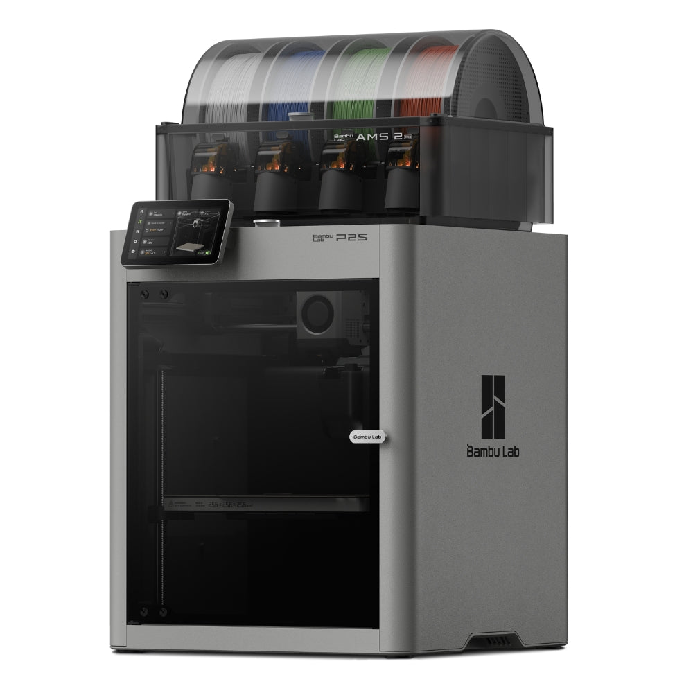

Bambu Lab P2S Combo vs Elegoo Centauri Carbon: Which Should You Buy?
3D Printer head-to-head · Updated 2026-10-07 · Based on independent reviewer consensus

Bambu Lab P2S Combo
$749
The 2026 mainstream king: enclosed CoreXY, 600mm/s, AMS 2 Pro multi-color with filament drying, 5-inch touchscreen and AI failure detection. The easiest path to great prints.
🔍 Purchase link under verification

Elegoo Centauri Carbon
$299
The 2026 budget disruptor: enclosed CoreXY, 500mm/s, 320°C nozzle that handles carbon-fiber filaments — at one-third the price of a P2S. No multicolor on v1, smaller community, unbeatable value for functional prints.
🔍 Purchase link under verification
📺 Video Reviews (3 sources) — tap to expand
Spec Comparison
Highlighted rows show where they differ. Dimmed rows are effectively the same.
| Spec | Bambu Lab P2S Combo | Elegoo Centauri Carbon |
|---|---|---|
| Build Volume 💡 max object size you can print — bigger = larger parts in one go | 256 × 256 × 256 mm | 256 × 256 × 256 mm |
| SpeedDIFFERS 💡 how fast filament gets laid down — 500mm/s is very fast | 600mm/s, 20,000 mm/s² acceleration | 500mm/s, 20,000 mm/s² acceleration |
| Nozzle TempDIFFERS 💡 max heat of the extruder — 300°C+ unlocks engineering plastics | 300°C, hardened steel | 320°C, hardened steel |
| Multi-colorDIFFERS 💡 print in several colors in one job — needs AMS or similar system | AMS 2 Pro — 4 colors per unit, up to 16 | No (v1); CC2 Combo adds 4-color at $449 |
| ChamberDIFFERS 💡 heated enclosure keeps temp stable — prevents warping on tough plastics | Enclosed, ~50°C passive | Enclosed, passive |
| Bed LevelingDIFFERS 💡 auto-calibrates the print surface — no manual knob-twisting | Fully automatic | 121-point automatic |
| FirmwareDIFFERS | Bambu OS (closed) | Klipper-based (Elegoo fork) |
| SlicerDIFFERS | Bambu Studio | Elegoo Slicer / OrcaSlicer / Cura |
Key Differences
- Price: P2S Combo $749 vs Centauri Carbon $299 — less than half
- Nozzle: Centauri 320°C beats P2S 300°C for high-temp engineering filaments
- Multi-color: P2S AMS 2 Pro (16 colors) vs Centauri v1 single-color only
- Ecosystem: Bambu MakerWorld + huge community vs smaller but growing Elegoo scene
- Software: Bambu Studio polish vs Klipper-based Elegoo (tinker-friendly, less refined)
💬 Strengths & Weaknesses
Bambu Lab P2S Combo
Strengths
- 🎨 Multi-color — If multi-color matters at all, the P2S wins by default — Centauri can't play.
- 👥 Community & Ecosystem — When something goes wrong at 11pm, the P2S community has already solved it.
- 🔧 Ease of Use — The P2S is the 'it just works' printer; Centauri rewards tinkerers.
Weaknesses
- 🧪 Materials — Centauri's 320°C nozzle opens more engineering filaments at one-third the price.
- 💰 Value — On pure price-to-hardware ratio, nothing touches the Centauri Carbon.
Elegoo Centauri Carbon
Strengths
- 🧪 Materials — Centauri's 320°C nozzle opens more engineering filaments at one-third the price.
- 💰 Value — On pure price-to-hardware ratio, nothing touches the Centauri Carbon.
Weaknesses
- 🎨 Multi-color — If multi-color matters at all, the P2S wins by default — Centauri can't play.
- 👥 Community & Ecosystem — When something goes wrong at 11pm, the P2S community has already solved it.
- 🔧 Ease of Use — The P2S is the 'it just works' printer; Centauri rewards tinkerers.
Beyond the Specs
🧪 Materials
| Bambu Lab P2S Combo | Elegoo Centauri Carbon 🏆 |
|---|---|
| PLA, PETG, ABS, ASA ideal; 300°C hardened hotend. | PLA, PETG, ABS, ASA, TPU + carbon/glass-fiber reinforced; 320°C nozzle — hotter than P2S. |
Centauri's 320°C nozzle opens more engineering filaments at one-third the price.
🎨 Multi-color
| Bambu Lab P2S Combo 🏆 | Elegoo Centauri Carbon |
|---|---|
| AMS 2 Pro with filament drying — up to 16 colors, dead simple. | No multi-color on v1. Single filament, single color. |
If multi-color matters at all, the P2S wins by default — Centauri can't play.
👥 Community & Ecosystem
| Bambu Lab P2S Combo 🏆 | Elegoo Centauri Carbon |
|---|---|
| MakerWorld's million-plus models, profiles for everything, big support network. | Growing Elegoo community, OrcaSlicer profiles maturing, but years behind Bambu. |
When something goes wrong at 11pm, the P2S community has already solved it.
🔧 Ease of Use
| Bambu Lab P2S Combo 🏆 | Elegoo Centauri Carbon |
|---|---|
| 15-minute setup, auto everything, AI failure detection, great app. | Good out-of-box experience, but expects more user involvement when tuning. |
The P2S is the 'it just works' printer; Centauri rewards tinkerers.
💰 Value
| Bambu Lab P2S Combo | Elegoo Centauri Carbon 🏆 |
|---|---|
| $749 for the complete multi-color package. | $299 — nothing else enclosed and this fast exists at this price. |
On pure price-to-hardware ratio, nothing touches the Centauri Carbon.
🏆 Verdict
Buy the P2S if you want multi-color, the best software, and zero-fuss printing. Buy the Centauri Carbon if you print functional single-color parts and want 80% of the capability for 37% of the money.
🏆 Our Pick: Bambu Lab P2S Combo
The 2026 mainstream king: enclosed CoreXY, 600mm/s, AMS 2 Pro multi-color with filament drying, 5-inch touchscreen and AI failure detection. The easiest path to great prints.
$749
🔍 Purchase link under verification
How we compare: Specs verified against manufacturer data and retailer listings (Oct 2026). Rankings reflect consensus across independent YouTube reviewers. Our methodology
← Back to all guides